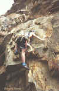

By Lee Skidmore, October 1999
Last updated 24 March, 2000

| Kissing Point Climbing Guide |
By Lee Skidmore, October 1999 Last updated 24 March, 2000 |
|
|
|
This cliff is five minutes drive from central Townsville, is close to parking, shops, and the beach. The crag is located to the left of the 'rock pool' on the
Strand. Its peak is a whopping 34m above sea level. On Townsville's 1:100000 map #8259 it is closest to the co-ordinates 79,72. Most routes are very easy (almost walks), with a smattering of moderate climbs. Many climbs have been soloed. Something to note is that essentially all of the routes at Kissing Point are easy for the grade. It's not a bad place to go in the afternoon when you don't want to drive far. The best thing about it is that it's slabby
aspect makes it a good place to teach beginners. Be aware that the rock is
less than perfect, especially when placing natural protection. Some falls here
have been very serious.
Description of all routes is from left to right when facing the cliff.
Spectator Wall
Don't belay or rap off the top of the fence which runs along the top of this wall. Use the provided fixed protection and the base of the fence poles to belay, and rap off chains above Hugs And Kisses (or do the epic 30 second walk down).
*** Swinging In A Sunday Sea Breeze 10m 21
Awesome! Hardest on the cliff, and also the best. One of the only climbs here that isn't a poxy slab! The line of five FH's starting 0.5m R of the ar�te. A left arm killer!
Scott says "If you use the sloping wall on the R you are not climbing the proper
route". Chains at top.
Scott Bewley 4/97
 |
||||
| A long shot of Jason Shaw on top rope | Philippa Newton on the crux on top rope | Lee Skidmore nailing it on top rope | Lee redpointing it | Took Smits attempting a lead |
Kiss It All Goodbye 15m 14
Starts 0.5m R of SIASSB in the corner. Climb R-leaning slab-corner with good pro throughout. Continue straight up the loose and dirty horrorshow to finish at obvious spiky tree. A variant finish escapes L up ramp before the chossy top.
Lee Skidmore, Philippa Newton 13/10/98.
|
The Butter Knife 9m 7?
From here you can walk directly back toward the water and slightly L to come across a small, overhanging bouldering wall. Took started developing some good power problems here one afternoon in July 1998. |
 |
|
Above: Lee bouldering while Took spots |
** French Kiss 17m 18
A deceptively good climb with some nice moves. Start 3m R of KOTSW. Up ramp to clip first FH. Up and trend L to pro in the big groove. Now up (crux) onto slab and clip second FH then cake to the top and a 45 degree FH belay.
Andrew Rule, John Louis Beaulieu, Mark Witham, Mark Gommers 7/97
The Long Kiss Goodnight 16m 14
Start 2m R of FK. Up ramp into the L-facing corner. Natural pro up this will lead you to the top and a 90 degree FH belay.
Mark Gommers, Andrew Rule(?) 7/97
* Pash 'n' Fruit 16m 18
A fun excursion. Start 3m R of TLKG below the obvious double rooflets with two black
FH's. Up ramp to below 1st overhang, clip FH above, crimp and pop around overhang. Slightly L beneath 2nd overhang, and then directly through this past FH (no stepping around L!). Now a naturally protected 10m ramble.
Lee Skidmore, Philippa Newton 23/7/98
|
Kiss The Sky 16m 15 This route deserves more attention than it gets. Has been made easier (damn it) after Keith VDB involuntarily pulled off a block on the start. The start used to give the grade. 4m R of P'n'F past small V-groove (pro) then slab to ledge. Easily to below R side of overhang. Punch through this fun rooflet (contrived) on jugs and then middle of slab (RP's) to top. If you step R to avoid the overhang, take off a grade or two. If it hasn't been climbed in a while, it may be a bit vegetated. Lee Skidmore 29/8/96 |
 |
|
Above: Lee onsighting the first ascent |
Middle Wall Leftside
The next three climbs are L of the "corridor". The corridor is the narrow causeway that runs about 20m deep between the walls (very recognisable landmark). The sea washes into the corridor at high tide.
Hall Of Worlds 25m 15
Top overhang is the grade, all else is simply the means of getting to the nice overhang : ). Starts 6m L of detached block 15m L of "the corridor". Through blackened rock and tiny overhang to big ledge below larger overhang. Now through middle of this overhang (a bit contrived).
Lee Skidmore 11/10/96
The Gauntlet 10m 10
Starts about 4m R of HOW. Steep wall 3m L of detached block to ledge, then directly up past deep slots to ledge and scramble off.
Lee Skidmore 19/10/96
Red Carpet Treatment 23m 8
Really easy, but nice and long. Middle of face 1m L of large detached block 2-3m R of TG. Tend R up the slabby rock following pockets and then past nice cracks/slots near top. Continue up short flaky pillar to belay seat.
Lee Skidmore 11/10/96
The Corridor
Middle Wall Rightside
These next two climbs are to the R of The Corridor.
Romeo 30m 12
Smooth wall (tricky crux) past a slot to small ledge. Step L, then up small corner to ledge. Up face behind.
Mark Gommers, Andrew Kinbacher 6/96
Juliet 30m 4
A walk. Start at detached wall 5m R of Romeo. Ar�te to ledge, then shallow groove to face.
Andrew Kinbacher, Mark Gommers 6/96
Romance Corner
To get to these next climbs, walk along top of cliffs until you reach a carpark, then descend the steep gully. Alternately, keep walking R (when facing the rock) from
the Corridor (only at low tide). You can also drive here directly and park in the carpark. When driving, take the left turn before reaching the main Kissing Point carpark and continue driving straight for 100m, through the gates, up into the Military Museum. Keep driving uphill until you reach the carpark, then walk down gully. There is a single FH at the top of the main wall (back it up with natural gear).
Unrequited Love 13m 13
This route tackles the smoothest section of slab on the main, seaward-facing wall. Start near wide crack at base of vague, blocky corner. Ramble up just R of the blocky corner to below smooth slab. Now climb the nice slab protected by a #2 RP.
Lee Skidmore, Philippa Newton 27/9/98

{kind=link}
{kind=link}
{kind=link}
{kind=link}
{kind=link}
{kind=link}
{kind=link}
{kind=link}
{kind=link}
{kind=link}
{kind=link}
{kind=link}
{kind=link}
{kind=link}
{kind=link}